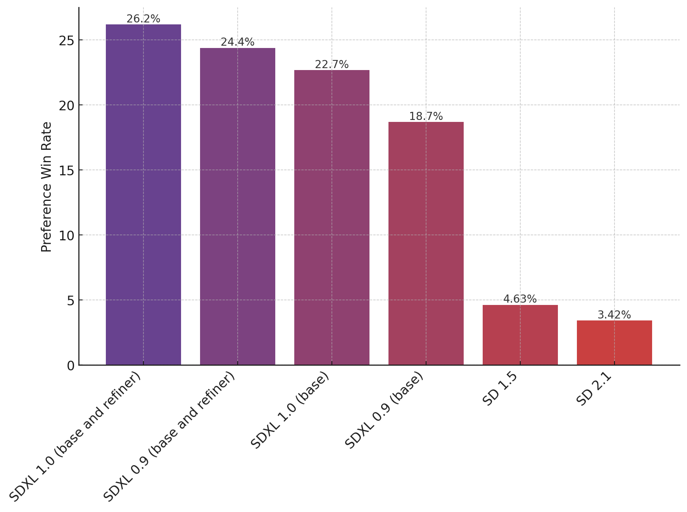
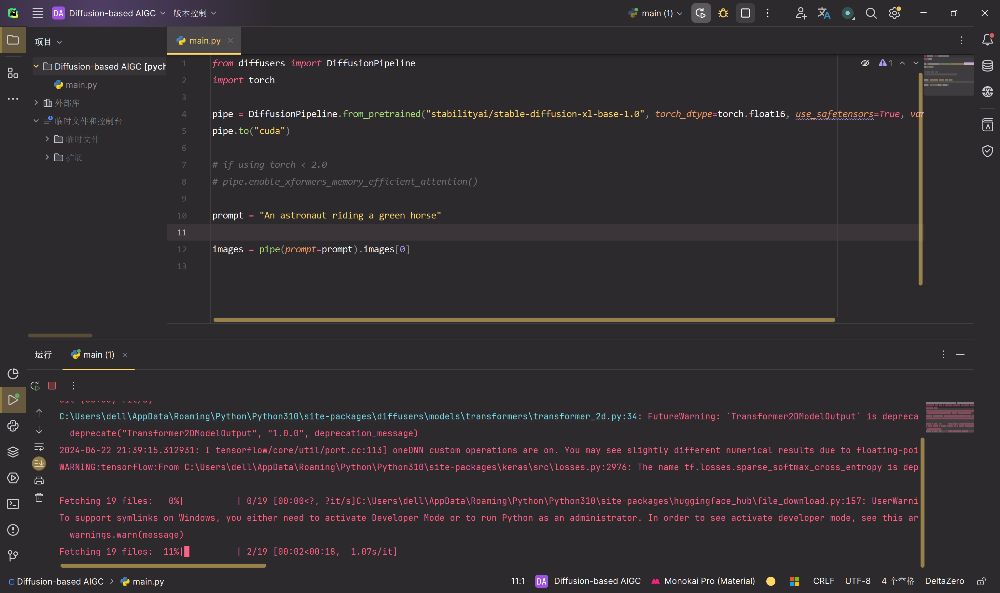
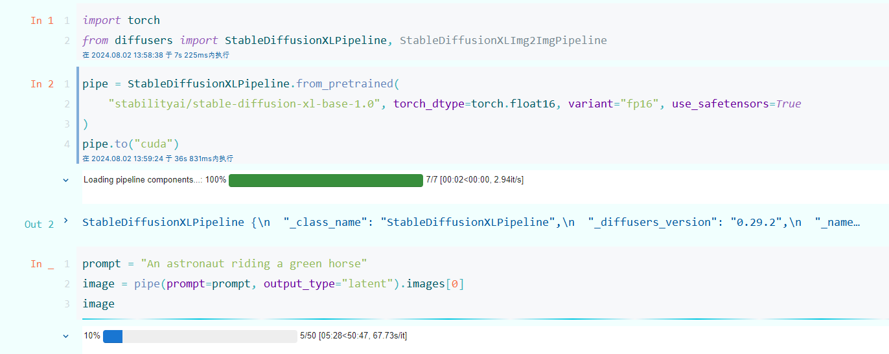
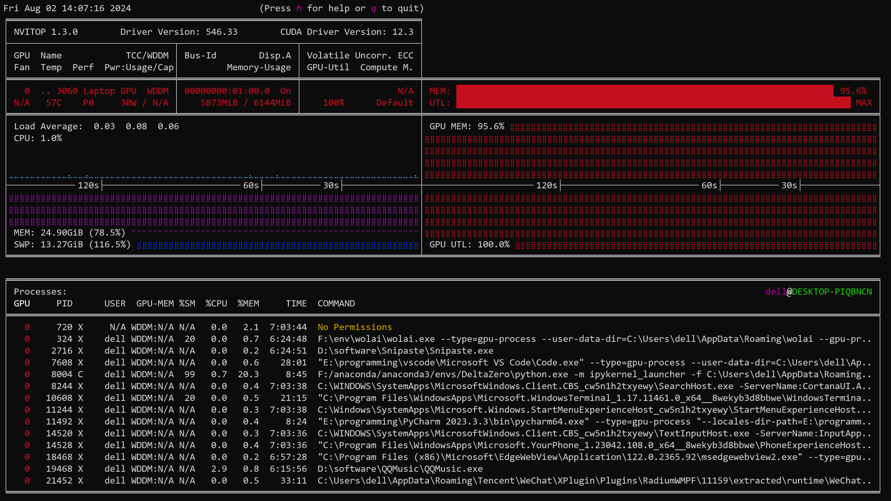

2024年西交多媒体小组考核任务1
1 任务要求
https://huggingface.co/stabilityai/stable-diffusion-xl-base-1.0
- 学会使用
Diffusers包调用StableDiffusionXL生成图片

2 模型结构

SDXL 由一组用于潜在扩散的专家管道组成：在第一步中，基本模型用于生成（嘈杂的）潜伏物，然后使用专门用于最终去噪步骤的细化模型（可在此处获得：https://huggingface.co/stabilityai/stable-diffusion-xl-refiner-1.0/）对其进行进一步处理。请注意，基本模型可以用作独立模块。
或者，我们可以使用两阶段流水线，如下所示：首先，使用基本模型生成所需输出大小的潜伏。在第二步中，我们使用专门的高分辨率模型，并使用相同的提示将一种称为 SDEdit （https://arxiv.org/abs/2108.01073，也称为“img2img”）的技术应用于第一步中生成的潜伏物。这种技术比第一种技术稍慢，因为它需要更多的功能评估。
源代码可在 https://github.com/Stability-AI/generative-models 上获得。
3 模型介绍
- 开发者：Stability AI
- 模型类型：基于扩散的文本到图像生成模型
- 模型说明：这是一个可用于根据文本提示生成和修改图像的模型。它是一种潜在扩散模型，使用两个固定的、预训练的文本编码器（OpenCLIP-ViT/G 和 CLIP-ViT/L）。
3.1 模型源
出于研究目的，推荐 generative-models Github 存储库 （ https://github.com/Stability-AI/generative-models），它实现了最流行的扩散框架（训练和推理），并且随着时间的推移将添加蒸馏等新功能。Clipdrop 提供免费的 SDXL 推理。
3.2 评估

上图评估了用户对 SDXL（有和没有改进）的偏好，而不是 SDXL 0.9 和 Stable Diffusion 1.5 和 2.1。SDXL 基本模型的性能明显优于以前的变体，并且该模型与细化模块相结合，可实现最佳的整体性能。
4 Pipeline的使用
4.1 介绍
pipeline()是使用预训练模型进行推理的最简单、最快的方法。可以将 pipeline() 开箱即用地用于不同模式的许多任务，其中一些任务如下表所示：
| Task | Description | Modality | Pipeline identifier |
|---|---|---|---|
| Text classification | assign a label to a given sequence of text | NLP | pipeline(task=“sentiment-analysis”) |
| Text generation | generate text given a prompt | NLP | pipeline(task=“text-generation”) |
| Summarization | generate a summary of a sequence of text or document | NLP | pipeline(task=“summarization”) |
| Image classification | assign a label to an image | CV | pipeline(task=“image-classification”) |
| Image segmentation | assign a label to each individual pixel of an image (supports semantic, panoptic, and instance segmentation) | CV | pipeline(task=“image-segmentation”) |
| Object detection | predict the bounding boxes and classes of objects in an image | CV | pipeline(task=“object-detection”) |
| Audio classification | assign a label to some audio data | Audio | pipeline(task=“audio-classification”) |
| Automatic speech recognition | transcribe speech into text | Audio | pipeline(task=“automatic-speech-recognition”) |
| Visual question answering | answer a question about the image, given an image and a question | Multimodal | pipeline(task=“vqa”) |
| Document question answering | answer a question about the document, given a document and a question | Multimodal | pipeline(task=“document-question-answering”) |
| Image captioning | generate a caption for a given image | Multimodal | pipeline(task=“image-to-text”) |
首先创建一个 pipeline()实例并指定要使用它的任务。使用 pipeline() 进行情绪分析作为示例：
1 | from transformers import pipeline |
4.2 在管道中使用另一个模型和分词器
pipeline()可以容纳 Hub 中的任何模型，从而可以轻松地将 pipeline()调整为其他用例。例如，如果想要一个能够处理法语文本的模型，请使用中心上的标记筛选适当的模型。顶部筛选结果返回一个多语言 BERT 模型，该模型针对可用于法语文本的情感分析进行了微调：
1 | model_name = "nlptown/bert-base-multilingual-uncased-sentiment" |
在 pipeline()中指定 model和 tokenizer，现在可以在法语文本上应用： classifier
1 | classifier = pipeline("sentiment-analysis", model=model, tokenizer=tokenizer) |
5 模型部署
将diffusers升级到 >= 0.19.0：
1 | pip install diffusers --upgrade |
另外，安装 transformers 、 safetensors 、 accelerate 以及不可见的水印：
1 | pip install invisible_watermark transformers accelerate safetensors |
若要仅使用基本模型，可以运行：
1 | from diffusers import DiffusionPipeline |
代码解释如下：
pipe = DiffusionPipeline.from_pretrained(...)初始化了一个扩散模型管道，使用DiffusionPipeline类。from_pretrained表明模型从预训练的检查点加载。"stabilityai/stable-diffusion-xl-base-1.0"是要加载的预训练模型的标识符或名称。torch_dtype=torch.float16指定模型应使用torch.float16（半精度浮点数）张量。use_safetensors=True表示应使用安全张量（可能具有额外的安全检查或功能）。variant="fp16"指定模型变体基于浮点16位精度 (fp16)。
之后将整个流水线移到GPU上，并且提示词“一位骑着绿马的宇航员”，将其作为模型输入，之后输出生成的第一个图像。
运行结果如下，正在下载文件中：

To use the whole base + refiner pipeline as an ensemble of experts you can run:
1 | from diffusers import DiffusionPipeline |
使用 torch >= 2.0 时，可以使用 torch.compile 将推理速度提高 20-30%。在运行流水线之前，用 torch 编译简单包装 unet：
1 | pipe.unet = torch.compile(pipe.unet, mode="reduce-overhead", fullgraph=True) |
如果受 GPU VRAM 限制，可以通过调用 pipe.enable_model_cpu_offload 而不是 .to("cuda") ：
1 | - pipe.to("cuda") |
6 任务实现
之前把代码放在一个py文件中跑的，但是每次跑都要加载模型，突然想到可以放在jupyter中跑，还能可视化生成的内容，如下：

现在正在推理，一开始打算用之前的云服务器，但是由于要访问抱抱脸，云服务器不知道怎么连外网，就先用自己电脑跑了，但是GPU都跑红了。

不过现在起码CPU利用率还好，不是很卡，GPU红就红吧，我还能干点别的。
 微信
微信 支付宝
支付宝